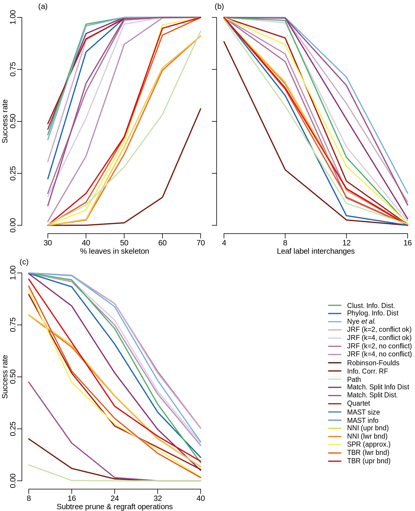

vignettes/06-lin-cluster-recovery.Rmd
06-lin-cluster-recovery.Rmd
Figure 2. Cluster recovery results. Successful cluster recovery rate for each tree distance metric under (a), test one: add 40 – k leaves to two k-leaf skeletons; (b), test two: conduct k LLI operations on two 40-leaf skeletons; (c), test three: conduct k SPR operations on two 40-leaf skeletons.
Rankings were calculated for each value of k and each clustering method, using lowest value in ties. The table reports the average ranking for all values of k and all clustering methods for each test.
| Test one | Test two | Test three | Mean rank | |
|---|---|---|---|---|
| Nye et al. | 4.66 | 4.150 | 3.76 | 4.19 |
| JRF (k=2, non-arb.) | 5.40 | 5.000 | 2.60 | 4.33 |
| Clust. Info. Dist. | 4.46 | 7.100 | 5.96 | 5.84 |
| JRF (k=4, non-arb.) | 8.08 | 6.750 | 4.70 | 6.51 |
| Match. Split Info Dist | 4.62 | 5.450 | 9.46 | 6.51 |
| JRF (k=2, arboreal) | 7.36 | 11.475 | 2.76 | 7.20 |
| Match. Split Dist. | 7.26 | 3.825 | 14.84 | 8.64 |
| JRF (k=4, arboreal) | 9.52 | 10.825 | 5.96 | 8.77 |
| Quartet | 5.14 | 9.550 | 12.38 | 9.02 |
| Phylog. Info. Dist | 6.50 | 13.750 | 7.10 | 9.12 |
| TBR (upr bnd) | 11.58 | 11.400 | 10.72 | 11.23 |
| SPR (approx.) | 12.18 | 9.225 | 13.00 | 11.47 |
| NNI (upr bnd) | 13.38 | 11.150 | 10.82 | 11.78 |
| Robinson-Foulds | 13.84 | 10.975 | 11.24 | 12.02 |
| NNI (lwr bnd) | 13.84 | 10.975 | 11.24 | 12.02 |
| TBR (lwr bnd) | 12.70 | 11.475 | 12.74 | 12.30 |
| Path | 14.14 | 11.900 | 16.14 | 14.06 |
| Info. Corr. RF | 16.34 | 16.025 | 15.58 | 15.98 |